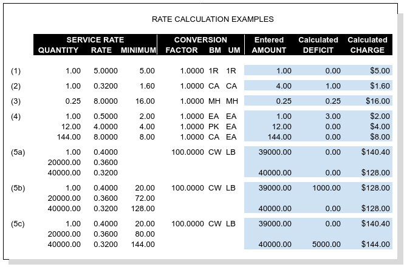

Rates Extended to Charges¶
A service may have a single rate or tiered rates, where multiple rates in tiers vary with quantity. Charges are calculated from quantities and rates according to the following rules.
- Quantity is required to be positive, the default value is 1.
- Where the quantity is fractional, the rate is for the fraction stated. For example, labor charged at the rate of $8.00 per quarter hour or fraction thereof would have a quantity of .25 and a rate of $8.00. Entered or calculated Amounts will be adjusted to the fractional units of the quantity.
- A rate entry is required unless the service is optional.
- The default minimum is the quantity times the rate. Enter a higher amount as desired.
- Where rates are tiered, the guantities must be listed in ascending order.
- Tiered rates with minimums are calculated to eliminate rate irrationality.
Minimums and Deficits¶
Where a Minimum charge is part of a rate, and the calculated product of Amount and Rate is less than the Minimum, WARES will apply a Deficit to satisfy the minimum requirement. For single rates, a Deficit amount always increases the extension of a rate to meet a minimum. However, with tiered rates a deficit amount may result in a decreased extension, that is, it may be to the customer’s benefit.
Basic Charge Calculations¶
The basic formula to calculate a charge from a rate is:
Subtle differences in the way a rate is expressed may have significant effects on revenue. The following figure shows a variety of charge calculations based on similar rate entries to illustrate this point.
Example 1: Straight Rate¶
Where a quantity is 1, the rate will provide a default minimum. In the example, a charge of $5.00 is applied to each qualifying activity (UOM = 1R represents a transaction). The Minimum is the Rate, and therefore Deficit is always zero.
Example 2: Minimum Applies¶
A Minimum greater than the Rate may apply, and deficient Amounts will trigger a Deficit to result in a charge equal to the minimum. In this example a $.32/case pick fee with a minimum equivalent to 5 cases is applied, while only 4 cases were picked.
Example 3: Decimal Quantity¶
A decimal Quantity may be used for rates expressed in fractional amounts. Here MH labor is charged as $8.00 per quarter hour or fraction thereof, with a minimum of $16.00, or a half hour of labor. This changes the Deficit formula to:
( Minimum * Factor * Quantity ) / Rate - Amount
and the extended charge formula becomes:
Rate * ( Amount + Deficit ) / ( Quantity * Factor )
Example 4: Quantity Breaks¶
Rates based on economic order quantity (EOQ) provide break pricing for specific quantities (cheaper by the dozen) or composite units of measure (PK, CA). This example shows Each, Pack, and Case picking charges where the order unit is EA (each) but the billing units are by the EOQ.
Example 5: Rate Tiers¶
Rate tiers offer several pricing options. A tiered rate may provide pricing with step changes (no deficits), with transition deficits benefiting the customer, or with transitions deficits penalizing the customer.
In this example, a container stripping fee is charged according to container weight. A charge is calculated for a container weighing 39,000 lb. and one weighing 40,000 lb. Rates are the same in each part of the example except for the minimums.
Part (5a): Irrational Rates¶
Deficit quantities are not calculated when minimums are absent. in part (a), there are no minimums and the charge at 40,000 lb. is $12.40 less than the charge at 39,000 lb. This is considered a pricing irrationality.
Part (5b): Beneficial Deficit¶
Irrationalities can be eliminated by applying line minimums. In part (b), the minimums on the second and third line equal the product of Quantity and Rate on those lines. WARES will compare the charge with the minimum at the next break, and if that minimum is less, a deficit will be added to move to the next rate level.
Now the Deficit calculation becomes:
And the Charge calculation is essentially as stated before,
Given the amount 39,000, the Deficit is:
and then the charge is calculated as:
The customer receives the benefit of a lower charge by being billed for a greater quantity based on the deficit.
Part (5c): Penalty Deficit¶
To avoid a price reduction for amounts below a break level, minimums should equal the break Quantity times the Rate of the previous level. In this example,
Now the charge at Amount = 39,000 lb. extends to $140.40 just as it did in part (a), but this is less than the next minimum of $144.00.
At Amount = 40,000 lb. there is a Deficit = 5,000 so that the charge meets the line minimum, $144.00. There is no rate irrationality, but the customer receives no early benefit from the rate break.
Charges Auditing and Display¶
WARES produces invoices summarized by rate, and transaction details supporting the invoice are provided in audit reports. These reports are described in the documentation topic Charges Audit Reports.